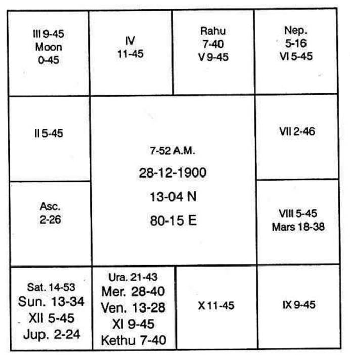
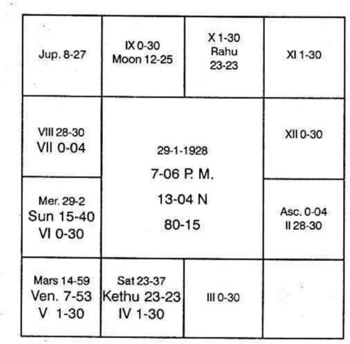

Since the zodiac is of 360° and it is equally divided into 12 signs, each extending to 30° exactly, in each sign there will be, on the whole 2(1\4) constellations, as shown below.
In Aries: Aswini, Bharani and 1/4 of Karthik;
In Taurus: Karthik 3/4, Rohini and Mrigasira 1/2
In Gemini: Mrigasirisha 1/2, Arudhra, P. Vasu 3/4.
In Cancer: P. Vasu 1/4, Pushya and Ashlesha.
In Leo: Makha, P. P. Guni and 1/4 of U. P. Guni
In Virgo: U. P. Guni 3/4, Hastha, Chithra, 1/2
In Libra: Chithra 1/2, Swathi, Visaka 3/4
In Scorpio: Visaka l/4, Anuradha and Jyesta.
In Sagittarius: Moola, P. Shada and U. Shada 1/4
In Capricorn: U. Shada 3/4, Sravana, Dhanishta 1/2.
In Aquarius: Dhanishta 1/2, Sathabisha, P. P. Pada 3/4
Constellation needs consideration.
The sign is not very important. The house occupied by a planet should be judged, taking in which constellation the planet is posited. The role of the sign occupied by the planet is not so important, as that of the constellation.
If a planet is in 12th bhava, it is said that it should cause separation, loss, issue of cheque. etc. But actually there is reunion, gain, receipt of cheques. Example is given below;

Jupiter Dasa 3 years 1 month 6 days.
This Gentleman had gains, fortune and success during Saturn, Mars and Sun Sub periods; desirable benefits during Jupiter and Mercury sub periods. But Ketnu in 10, Venus in 11 and Rahu in 4 gave untoward and undesirable results.
According to traditional system. Saturn and Sun must be the worst. Jupiter also will fall in 12th bhava and ought to have been very bad. Venus and Budha causing Dharma Karmadhipathi Rajayoga, should give brilliant results. Rahu representing, Venus must cause Rajoyoga. Mars should be dangerous. This person was my friend for a long number of years and such results alone opened my eyes.
In 1939, when 1 visited Coimbatore, I heard one Nadi reader, reading the results of a few persons in his cottage. I understood that planets’ results were read as they were found in the bhavas. Then I heard many Nadi readers. None made use of the constellation. While reading the Nadi, I understood that without assigning the reason, the results were read and they were astoundingly meticulously correct. For the future, they gave the reasons taking the traditional methods of the bhavas and the future proved to be mostly a failure. So I started the research, collecting the horoscopes of old people with past events.
Such horoscopes as shown above threw the light. What is it? A planet ‘A’ offers the results of the house occupied by that planet ‘B’ which is the lord of the star wherein this planet ‘A’ is deposited.
Again trouble arose when 2, 3 or 4 planets are found in the same constellation, as all the planets in the same star, though referring the same matters, yet gave diametrically opposite results, i.e. if planets A, B, C and D are in one constellation, in the same house, A and C gave pleasant results whereas B and D gave just opposite results. This made me think further. 1 found that a particular dasa is to cause Rajayaga. But yet, he gets most desirable result, in some bhukties and disadvantageous results in some Bhukties. Then 1 started doing research and in all cases 1 found that planets, though they are in the same constellation, yet a few are beneficial and a few unfavourable. This caused me to further carry on the research. 1 found that every constellation must be divided in the manner 1 have said into 9 subs and each sub having that area in a constellation in the proportion in which they are allotted the number of years in Vimshodhari dasa.
I proved that planets occupying any one constellation, has connection with the Bhava occupied by the lord of the constellation. These planets in that constellation are termed as the “Significators” of the bhava occupied by the lord of the constellation. Thus if one works out for all the planets then each planet is found to signify the matters of a few houses.
Then judge each planet. The planet signifies a matter. Whether it votes for the progress and prosperity of that matter or due to the sub lord it is not capable of doing good, further it does harm to that bhava signified by the planet, is to be studied.
This discovery has crowned me with success.
I say “if a planet is the significator of lagna bhava, it gives long life, success in attempts; it helps to maintain good health, if the sub lord is not the significator of 6 or 8 or 12. If the sub lord of the planet signifies 6th house and if a planet shows lagna results and occupy such a sub ruled by the significator of 6, he falls ill. The constellation refers to his health, sub signifying 6 gives disease. If a planet signifies lagna bhava and it is in the sub of the significator of 8, he meets with danger.
If the sub lord signifies 12th house and the significator of lagna is in such a sub, one runs away, or one is imprisoned, or hospitalized.
Therefore constellation lord shows whom or which matter it refers. But the deciding factor, good or bad, success or failure is shown by the sub occupied by the significator.
Suppose a planet A is the significator of second bhava and it is in the sub of 6 one borrows but if it is in the sub of 8 or 12, he lends to others or repays loan.
If it is in the sub of 11, there is gain; of what? Either money or son - in - law or daughter - in - law or child birth to the person. If the significator of the second house is in the sub of the significator of 3, through brother one gains, brother loses or gives away: If it is in the sub of 4, one may have car or house during the period of the significator in 2, in the sub of 4th house significator, in their conjoined periods. if the significator of the 4th house which rules the sub and if it is also the significator of 11, he purchases or acquires, if the sub lord who is also the significator of 12 other than 4, he sells and converts the permanent possession as liquid cash and his bank position improves by losing the car or building. If the sub lord of the planet signifying second house is the significator of 10 and 12, then lets his land for tenancy or lets the house for rent. Why? 10th house is the 4th to the 7th with whom you transact, so that which he takes is given by you (12) and he is indebted (6).
Suppose a planet is the significator of 7th house and if it is in the sub of 2 or 11 one gains, there is reunion, one gets married, etc. If it is in the sub of the significator of 12, separation or ill health to wife. If it in the sub of 1 and 2, danger to partners’s life. There can be 3 or 4 or any number of significators for the 7th. Therefore during the period or sub period of a planet in such a sub whose lord signifies 12th house, wife fails ill - or the native goes away and separation is caused. If the sub lord signifies 6th house, the wife goes away, thereby there is separation.
If the planet is the significator of 7th house and sub of 4, partner gains, makes money and earns name. If the significator of 7 is in the sub of 5, partner makes money, friendship and enjoys pleasure. if the sub is ruled by the significator of 8th house, there is either income or danger to life. If that significator of 8th house is also significator of 5 partner gains. But significator of 8 is also significator of 1 and 7, it means death as 8 and 1 are maraka house to the 7th.
Thus one should note separately what each planet signifies. Then in which sub each planet is posited.
Finally one should take each house and judge, to which bhavas the planet are the significators and the sub lords. Judge calmly how each bhava is receiving good results from a few and adverse from the rest.
Say, mother, father, child, etc. Mother is shown by 4th house. Father by 9th house. child by 5th house.

So, note the significators of 4: so also the significators of 9 and 5.
Let us take the above chart.
Kethu Dasa balance 0 - 5 - 23,
The constellation ruled by a planet indicates the matters, signified by the bhava occupied or owned by it.
The sub lord occupied by a planet denotes whether it is auspicious for the progress of that Bhava or inauspicious so that one has obstacle or faces disappointment or negation of the matter.
This applies to all bhava results. If lagna is occupied by a planet or owned by one and if a planet either the same lagnadhipathi or any other planet is deposited in the occupants or owner’s star, then they indicate first house matters. If the depositor in that constellation is in the favourable sub matters indicated by lagna will thrive. If the depositor in that constellation is in unfavourable sub the matters indicated by the lord of the constellation as per its occupation or ownership will suffer.
Lord of lagna is Sun: no planet is in lagna, Sun’s stars are Karthik, Uthraphalguni and Uthrashada. Planets, if deposited in these stars will refer the matters signified by first house. If there is no planet, Sun gives lagna bhava results.
In the above chart, there is no planet in Sun’s star. Hence Sun gives lagna results. Sun is in Moon’s star. Moon is in 9 and owns 12. Hence Sun mostly refers to the matters signified by 9 and 12 i.e. long journey: staying outside: loss of father. permanent possession of father, separation from father. Let us judge the death of his father.
Note the sub occupied by Sun. It is in Jupiter’s sub, what can Jupiter do to the 9th house? What can Jupiter do to the 12th house?
Jupiter is in Saturn’s star. As Saturn is the Bhadhakastha - naadhipathi to 9, Jupiter indicates Bhadhaka to father. Therefore if a constellation indicates father, then the sub of Jupiter in that constellation indicates danger to father.
Therefore Sun in the constellation of Moon in 9 and sub of Jupiter - the Bhadhaka to father, promises danger to father.
9 house is owned by Mars. It governs Mrigasira, Chithra and Dhanishta stars. Rahu and Mercury are in Mars star. Rahu is. in the sub of Mars who denotes, longevity to father. Mercury is in the sub of Saturn Bhadhaka to father. Hence Rahu is a benefic whereas Mercury is evil.
To the longevity of father houses 2 and 7 counted from 9th is evil. Both are owned by Venus. Rahu occupies 2 (to9). Mars occupies Venus star; none in Rahu star. Mars is in the sub of Venus. So it is harmful : Rahu is in the sub of Mars; it is good.
Therefore Sun, Mercury, Mars are evil. Venus is in Jupiter sub. Venus is also evil. (Venus is in the constellation of Kethu who represents 4th and 9th houses. Therefore Venus indicates the houses 9, 10 and 3 -danger to father.)
His father died during Sun Dasa Mercury Bhukthi Venus Anthra in July 1952.
Let us judge 4th house. It is occupied by Sani and Kethu. It is owned by Mars.
SO planets in Saturn's stars Kethu stars and Mars stars are those which refer 4th house matters.
Venus In Kethu star, Jupiter in Saturn star, Mercury in Mars star indicate 4th house matters.
Venus is in the sub of Jupiter, Marakasthanadhipathi and Venus is in Marakasthana to 4 (2nd from 4th).
Jupiter is in Venus sub. It is evil. Mercury is in Saturn sub. As Saturn is in rapt conjunction with Kethu and Saturn is in the constellation of (Mercury, lord of 8th from 4th) Mercury is evil : Saturn is also evil.
Now Venus, Mercury, Mars, Saturn, Moon, etc. refer 4th house matters. It is. the lord of the sub which indicates whether 4th house matter will thrive or not.
Venus is in 2 in the sub of lord of 2.
Mercury in the constellation of planet in 2 to 4, owner of 4 and in sub of evil in 4.
Saturn in the sub of Jupiter and Kethu in the sub of Jupiter, both occupying 4th house are evil. Hence he lost his mother during Venus Dasa Mercury Bhukthi Saturn Anthra on 27 - 4 - 47.
Let us analyse the date of death of his mother. It was on 11 - 4 - 47 when Venus Dasa (in the constellation of occupant of 4 and sub of the occupant of 10) Mercury Bhukthi (constellation of planet in 2 to 4 and sub of planet in 4) and anthra of Saturn which refers the 4th house (to give life or cause death depending on the sub which Saturn occupied) and it is in the sub of Mars and Shookshma of Rahu in 10 which is also in the constellation of Mars in 2 to 4 and sub of Mars.
Day of demise - Friday. Star Moolam where Dasanatha was (Jupiter rasi Jupiter significator of 4 in Saturn star and sub of Venus in 2 to 4) at night when lagna was in Poornashada 15° in Dhanus.
Death of child happened during Moon Dasa Jupiter Bhukthi Rahu Anthra. Moon is in the constellation of Kethu and sub of Mercury. Kethu has to give the results of planet with which it is conjoined, as it is a node. Saturn is lord of 2 to 5 and situated in 12 to 5. Hence Moon is definitely evil as it is in the constellation of the node representing the second house to the 5th and in the sub of lord of 7 to 5, situated in 2 to 5.
Jupiter is in the constellation of Saturn, lord of 2 in 12 to 5th house and sub of Venus, which is the occupant of 5 in the constellation of node in 12 to 5. Venus itself is evil to 5. Mars in Venus star Venus sub is also evil. Rahu in Venus sign Mars star and Mars sub is definitely evil.
Hence, Moon Dasa Jupiter Bhukthi Rahu Anthra was evil.
Let us take pleasant functions. Marriage
Judge houses 2, 7, and 11 counted from lagna.
2, 7 and 11 are vacant. 2 is ruled by Sun, 11 is ruled by Mercury. 7 is owned by Saturn.
Saturn and Kethu are in Mercury star. Jupiter is in Saturn's star. Kethu is stronger than lord of 7. Moon and Venus are in Kethu star. Sun is also strong as there is no planet in Sun's star.
Marriage took place during Venus Dasa, Kethu Bhukthi, Venus Anthra, Moon Shookshma on 6 - 7 - 1947 on Sravanam star day.
Venus is in Kethu star. Kethu is stronger than Saturn, lord of 7 (7th house vacant).
Kethu is in the star of Mercury (lord of 2 and 11). Both houses, vacant.
Moon is in Kethu star. Kethu stronger than Saturn, lord of 7.
Kethu has to predominantly indicate Saturn's result; then only that of Mars. Moon's star is not in Mars sign. Hence, Sravanam star governed by Moon in Saturn's sign gave marriage.
Normally when one finds Saturn and Kethu in 4 and 9th house occupied by lord of 12, one following traditional Astrology must say that the native will have no tendency towards education. Also that he cannot come up nicely in studies.
But according to Krishnamurti Padhdhati, Saturn and Kethu in 4 are in the constellation of Mercury, lord of 11 and sub of Mars owner of 4, education and 9, higher education.
According to my method, if the dasanatha is connected with houses 4 and 9, they will give education.
Venus in the constellation of node in 4 gave studies throughout Venus Dasa.
Sun in the constellation of Moon in 9 gave higher studies. As Moon is also significator of 12, Sun in the constellation of Moon, gave the break and ended his studies.
He discontinued his studies after successfully completing Medical College course during Sun Dasa Saturn Bhukthi Sun Anthra in December, 1952.
Take houses 2, 6 and 10. Sun and Mercury are in 6. Rahu is in 10. Kethu indicates what Saturn is to do, and Saturn is lord of 6. Sukra is lord of 10.
First appointment was in Sun Dasa (in 6). Saturn Bhukthi (lord of 6). Sun has no planet in its star. Hence Sun has to give surely 6th house results. Saturn in the constellation of Mercury (lord of 2) and owner of 6 has to offer. Kethu can give. Also Moon and Venus. Moon in mercury sub is very strong. First appointment was in Sun Dasa Saturn Bhukthi and Moon Anthra in January, 1952.
Thus various instances can be quoted.
PAGES 151 152 is publicity